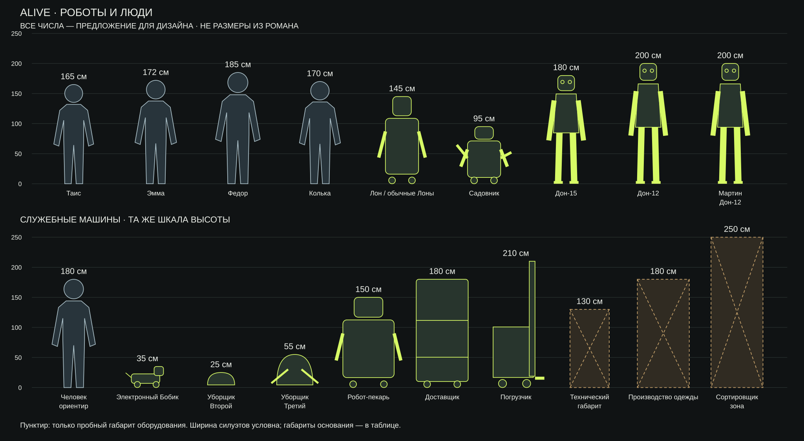

Роботы и люди: масштаб
Рабочий размерный лист · 24 октября 2026
Все численные размеры ниже — предложения для дизайна. В романе подтверждены относительные соотношения; измеренных моделей пока нет.


Первым — Лон
Лон соединяет бытовую механику и характер: чинит комод, готовит, заботится о детях, свистит и шутит. Для первого концепта предлагается высота 145 см и основание 55 × 55 см. Белый корпус, маленькие чёрные колёса, неподвижная полоска рта, боковая щётка и экран под передней панелью взяты из романа.
Перед художественными вариантами нужно проверить четыре действия на одном простом макете: работа у поверхности 90 см, ремонт ящика, удержание ребёнка и разворот с руками в проходе. Высота 145 см сама по себе не доказывает устойчивость: нужны масса, центр тяжести и положение груза. Столешница 90 см и пробный проход 80 см здесь также приняты для проверки, а не взяты из текста.
Обязательные связи: Дон-15 ниже Дона-12 (с. 108); садовник примерно по пояс Таис (с. 422). Мартин относится к Донам-12. Перепрограммирование не увеличивает Дона-15. Рост людей нельзя восстановить по поясным портретам без масштаба.
Доставщик выглядит крупным за счёт основания 120 × 180 см, а не обязательной гигантской высоты. Погрузчику отдельно нужны транспортная высота и зона подъёма; 360 см подъёма — пробная проверка пространства, не факт романа.
Размеры и основания выбора
Высота и диапазон в сантиметрах. Диапазон — варианты для проверки, не погрешность измерения. Основание: ширина × длина, без раскрытых манипуляторов.
| Фигура / машина | Высота | Диапазон | Основание | Опора в романе | Почему предложен размер |
|---|---|---|---|---|---|
| Таис | 165 | 160–170 | — | Таис невысокая; Эмма выше неё; садовник ей по пояс. Сантиметров нет. PDF: 59 · 202 · 422 | Условная фигура для привязки садовника к поясу. |
| Эмма | 172 | 168–176 | — | В сцене встречи выше Таис. PDF: 59 | Сохранено относительное соотношение; рост в портрете не измерить. |
| Федор | 185 | 180–190 | — | Высокий, широкоплечий; численного роста нет. PDF: 233 · 418 | Условный высокий человек для проверки проходов. |
| Колька | 170 | 165–175 | — | Худой подросток; сантиметров нет. PDF: 19 · 108 · 433 | Условная фигура, без вывода о росте по возрасту. |
| Лон / обычные Лоны | 145 | 135–155 | 55 × 55 | Колёса, работа у мебели, уход за детьми; рост не указан. PDF: 31 · 32 · 33 · 45 · 73 · 123 · 124 | При выбранной столешнице 90 см: плечо около 110 см, досягаемость руки около 60 см. Проверить устойчивость при переноске ребёнка. |
| Садовник | 95 | 90–105 | 55 × 65 | Прямо: по пояс Таис; четыре руки разной длины. PDF: 37 · 422 | Пояс условной фигуры Таис на 95 см. Пересчитать после выбора её роста и пропорций. |
| Дон-15 | 180 | 170–190 | 65 × 45 | Прямо: ниже Дона-12; тяжёлый корпус. PDF: 108 · 110 · 111 | На 20 см ниже двенадцатого; более широкий корпус. При смене высот сохранить неравенство. |
| Дон-12 | 200 | 190–210 | 60 × 45 | Высокий андроид, длинные ноги; рост не указан. PDF: 38 · 39 · 108 · 116 | Выше человеческих фигур, пригоден для работы с дверями и медицинским оборудованием. |
| Мартин · Дон-12 | 200 | 190–210 | 60 × 45 | Именной Дон-12; отдельный корпус не описан. PDF: 122 · 129 · 404 · 407 | Тот же размерный стандарт, без выдуманного увеличения из-за статуса. |
| Электронный Бобик | 35 | 25–45 | 25 × 50 | Самодельный колёсный пёс; точного размера нет. PDF: 304 | Компактная детская сборка; высота до верхней точки, не до холки. |
| Уборщик · Второй | 25 | 15–35 | 45 × 50 | Маленькие машины гудят под ногами. PDF: 44 | Низкая платформа для уборки под мебелью; форма условная. |
| Уборщик · Третий | 55 | 40–65 | 60 × 70 | Маленькая полупрозрачная сфера; две руки-трубки. PDF: 175 · 177 | В корпусе предполагаются сборник и привод. Высота без поднятых манипуляторов. |
| Робот-пекарь | 150 | 135–170 | 85 × 75 | Крепкий квадратный корпус; выдвинутые руки; выкатывается. PDF: 58 · 449 | Работа у принятой поверхности 90 см, устойчивость под грузом теста. |
| Доставщик | 180 | 160–210 | 120 × 180 | Огромный и неповоротливый, разгружает продукты. PDF: 56 | Крупность через длинное широкое шасси и грузовой объём. Груз в высоту не включён. |
| Погрузчик | 210 | 180–230 | 120 × 190 | Перевозит и складывает ящики; колёсный ход. PDF: 110 · 284 | 210 см до сложенной мачты; 360 см — отдельная пробная рабочая зона подъёма. |
| Технический · габарит | 130 | 100–170 | 65 × 80 | Ремонтирует инфраструктуру; тип корпуса не установлен. PDF: 12 · 104 | Только пробный габарит сервисного носителя. Не отдельная подтверждённая модель. |
| Производство одежды | 180 | 140–220 | 120 × 100 | Упомянуто производство одежды роботами; корпус не задан. PDF: 16 | Пробная ячейка оборудования, не рост антропоморфного робота. |
| Сортировщик · зона | 250 | 200–300 | 180 × 180 | Стационарная линия и манипуляторы у конвейера. PDF: 103 · 278 | Пробная высота рабочей зоны от пола. Высота собственного корпуса зависит от монтажа. |
Названия, которые не означают отдельную модель
- Медицинский Дон-12. Функция двенадцатого, отдельный рост не задан.
- Перепрограммированный Дон-15. Смена программ не меняет корпус.
- Складская охрана. Робот, убивший Сашка, назван Доном-15 (с. 145). Не вводим лишнюю модель.
- Безопасность и сопровождение. Функциональные названия; отдельный тип корпуса не установлен. До уточнения не назначаем новый рост.
- Старые Лоны. На с. 226 сказано о прежних моделях; их габариты не описаны.
- Моаг и голограммы. Моаг — распределённая система, голограммы не физические роботы. Собственного роста на листе нет.